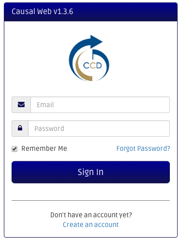
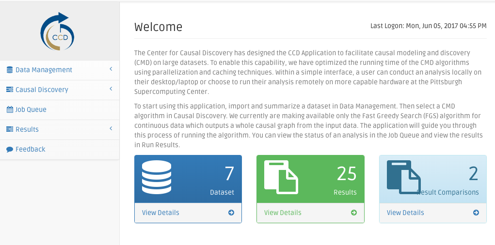
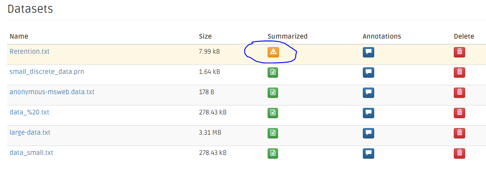
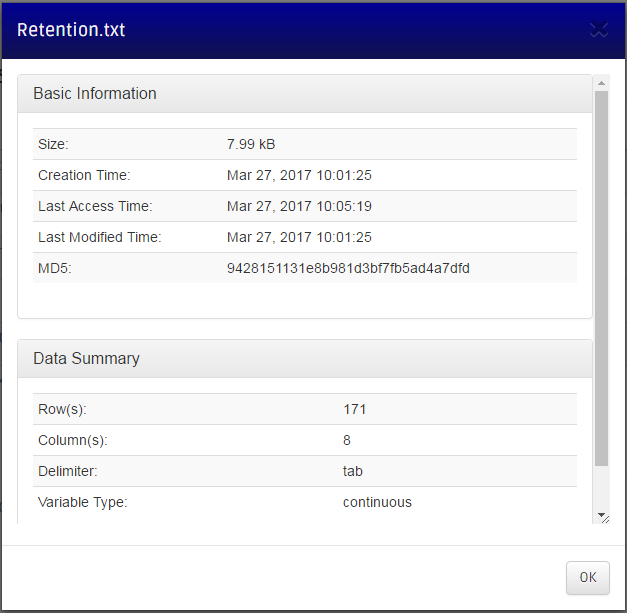
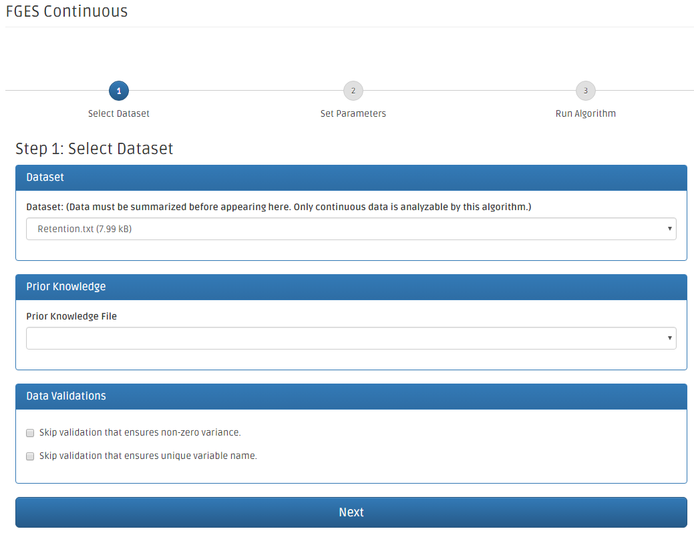
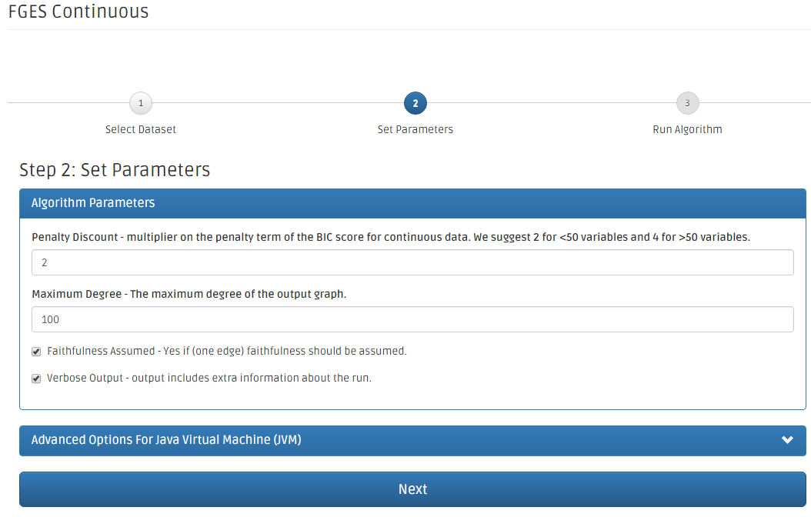
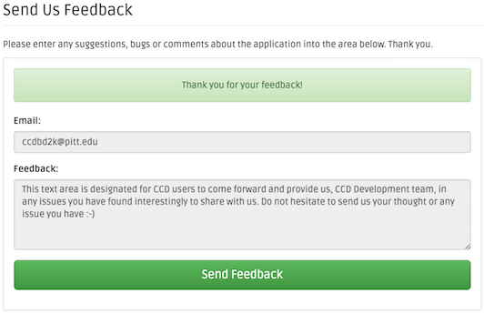

Causal Web Application Quick Start and User Guide
Causal web is a Java web-based application that allows users to run causal modeling algorithms on their dataset. The Center for Causal Discovery is hosting this application at the Pittsburgh Supercomputing Center(PSC) and you can access it via this URL: https://ccd4.vm.bridges.psc.edu/ccd/.
Creating Your Account
You can create a new account by clicking "Create an account" link on the login page.

Fill your information in the signup page. Make sure to read the Terms & Conditions agreement and check the agree box before clicking the signup button.

Upon finishing registration, the system will send out an email with an activation link. Go to your email accont and click on that link, then the Causal Web shows a confirmation message.

Login to Causal Web Application
Input your email address and password that you want to use to register with the Causal Web system. Check the "Remember Me" checkbox if you would like the browser automatically log you in next time you visit.
Here we go! You are now in the Causal Web application.

Uploading Your Dataset
Click on the Data Management link on the navigation bar on the left side. There is a sub menu that will appear. Click on the Import Data link.

You can EITHER drag & drop dataset file(s) into the dash-surrounded canvas OR you can click on the Browse button and choose the dataset file(s) you would like to upload to the Causal Web application. For testing purposes download this dataset: Retention.txt and upload it.

The Import Data panel shows the dataset upload progress as a percentage along with MD5 checksums (confirms that an uploaded file's contents are unchanged after upload) for each of uploaded files.
You can also pause the upload of files and resume later. In the case of a disrupted connection, you can resume the upload by repeating the previous steps. The Causal Web application will detect the unfinished upload and resume from the latest point of the last attempt.
Once all your dataset file(s) are all uploaded, the progress bar will show the (completed) sign.
Summarizing Your Dataset
Before any analysis can proceed, the datasets need to be summarized. Specifically, you must indicate the delimiter used in the data file (tab vs. comma), and the types of variables found in the file. Once this is done, the Causal Web application will determine the number of columns (features) and rows (records) in the dataset.
Click on the Data Management menu on the navigation bar on the left side. The sub menu will slowly appear. Click on the Datasets menu.

The dataset page shows a list of datasets and their attributes. On the second Summarized column from the right, the yellow warning buttons indicate that the system has not yet summarized.

Click on the dataset's name's link to see the dataset information. From this stage, the data summary information is missing: the dataset needs to be summarized before conducting causal analysis.

From the dataset page, click on the yellow warning button to summarize a dataset. The data summarization page shows information of the dataset, its basic information, and additional information that will be determined after summarization (a number of rows and columns). The bottom panel has two radio boxes for you to choose variable type (continuous, discrete, or mixed), and delimiter (tab or comma). The Retention.txt dataset described above is tab-delimited and contains continous variables.

Once the dataset is summarized, the dataset page changes its sign to be a green button. Click to see the additional information of this summarized dataset.

Click on the dataset's name's link to see the additional information.

Annotating Your Dataset
On the Datasets main page, the blue icon is for viewing and entering annotations.

Click the annotation icon, and you can add new annotation, just click the "New annotation" button.
The application will pop up the annotation form.
You can also add another annotation on top of the exisiting annotation.
Uploading the Prior Knowledge
Click on the Data Management menu on the navigation bar on the left side. There is a sub menu that will appear. Click on the Import Data menu.
You can EITHER drag & drop prior knowledge file(s) into the dash-surrounded canvas OR you can click on the Browse button and choose the prior knowledge file(s) you would like to upload to the CCD Web application. Note that the prior knowledge file needs to have .prior file extension.
Executing an Analysis on Your Dataset
Click on the Causal Discovery menu on the navigation bar on the left side. The sub menu will slowly appear. FGES and GFCI are the currently supported algorithms.
FGES algorithm can handle Continuous, Discrete, and Mixed data files.
GFCI algorithm can handle Continuous, Discrete, and Mixed data files as well.
The Dataset drop-down box contains a list of datasets that you have uploaded. If those datasets are already uploaded and they are not displayed in the dataset drop-down box, it means that the Data Summarization process to be reviewed in the first place prior to execute a causal FGES (Continuous) analysis.
If a prior knowledge file needs to be included in the analysis, Prior Knowledge File drop-down box contains a list of knowledge files. Before clicking the Next button, the data validation parameters need to be input.

Here, the FGES Continuous algorithm page allows user to modify its parameters.
- The first one is Penalty Discount and its default value is 2.
- The second one is Search Maximum Degree and its default value is 100.
- The third one is Faithfulness Assumed and its default value is checked.
- The fifth one is Verbose output and its default value is checked.
Click Next to proceed or click Advanced Options (JVM) for the JVM customization.

Expert Mode: the JVM parameters allow users to customize JVM parameters such how much maximum memory (in Gigabyte scale) the process would allocate (e.g. 4).

This is the summary page before the FGES job analysis is put into the queue. Click on the number 1 (Select Dataset) or number 2 (Set Parameters) to go back to modify the parameters. Once, everything is set. Click the Run Algorithm! button.

The application will redirect to the Job Queue page. The analysis job is added to the queue. The Queued status means that it waits for the scheduler to run it once the executing slot is available. However, the Job Queue page does not currently automatically update the jobs' status (at least in this development stage). Refresh the Job Queue page from time to time to see the latest jobs' status.

Once the job slot is available, the queued job is then executed and its status changes to Running.
When the job is finished, it is automatically removed from the Job Queue page. The result of the analysis is added to the Results page.
In case the queued or running job needs to be killed or removed, click the Remove button on the first column on the Job Queue page from the right. The Remove Job confirmation page is popped up. Click Yes to kill the job or No to cancel the kill operation.

After the job cancellation is confirmed, the job's status changes to Kill Request. The scheduler will take care of removing of the job from the queue or killing a job in the server.

If the running job was killed or any error happened during the process, the error result will appear in the Results page. Its background is highlighted in red.

If there is an error, you will see the details of the error by clicking on error result link.
Reviewing Your Results
Click on the Results menu on the navigation bar on the left side. Click on the Algorithm Results menu.

The Algorithm Results page shows a list of results, their creation time and their size. In the first column from the right, the green Save buttons provide the ability for users to download results to their local computers. Click on the result's name's link to see a causal graph of the result.
Check the result files on their checkboxes to compare the results. Note: a number of comparing datasets can be more than two files.
The results page details the graph, the original dataset, and its parameters. Click on the View Full Screen button to see the causal graph in more detail.

Based on the nature of your data, sometimes you may see the generated graph (PAG) containing dashed links in addition to solid links. For example:
-
If an edge is dashed that means there is no latent confounder. Otherwise, there is possibly a latent confounder.
-
If an edge is green that means it is definitely direct. Otherwise, it is possibly direct.
Comparing Your Results
Click on the Results menu on the navigation bar on the left side. To compare two results click on the Algorithm Results item on the left. Select at least two results (place a checkmark next to the results) and click on Compare. Now click on the Result Comparisions item on the left.
The Result Comparisons page shows a list of results, their creation time and their size. On the first column from the right, the green Save buttons provide the ability for users to download results to their local computers. Click on the result's name's the link to see the detail of the result comparisons.
The Result Comparisons page shows the datasets compared, and the table of edges, their mutual appearance in all comparing datasets, and their mutual endpoint types.
Downloading Your Result And Comparision Result
On the first column from the right of the Algorithm Results page, the green Save buttons provide the ability for users to download results to their local computers.
On the first column from the right of the Result Comparisions page, the green Save buttons provide the ability for users to download result comparisons to their local computers.
Submit Your Feedback
Click the Feedback menu on the navigation menu bar on the left. The Feedback page shows the email (optional), and the text area for the user feedback (required). Once, the feedback is filled, click the Send Feedback button.

The green Thank you for you feedback! banner shows that the feedback submitted successfully.
